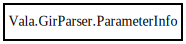

Vala.GirParser.ParameterInfo – vala Reference Manual
Packages
vala
Vala
GirParser
ParameterInfo
ParameterInfo
array_length_idx
closure_idx
destroy_idx
is_async
keep
param
vala_idx
ParameterInfo
Object Hierarchy:

Description:
private
class
ParameterInfo
Content:
Creation methods:
public
ParameterInfo
(
Parameter
param,
int
array_length_idx,
int
closure_idx,
int
destroy_idx,
bool
is_async =
false
)
Fields:
public
Parameter
param
public
float
vala_idx
public
int
array_length_idx
public
int
closure_idx
public
int
destroy_idx
public
bool
keep
public
bool
is_async